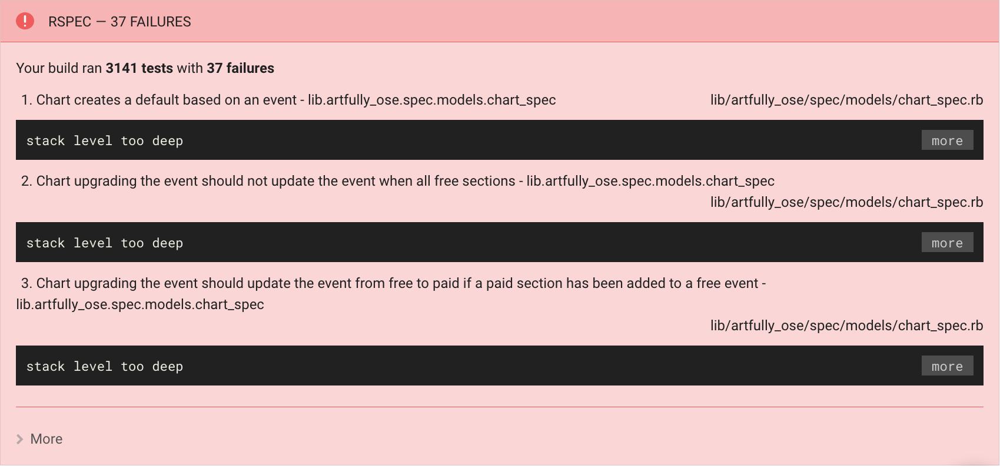

One day ci decided to do this to me:
And trying to fix my build for a FULL FUCKING DAY
I ran out of ideas, which was my queue to midlessly poke around on the internet
check twitter
remember that twitter's kinda boring
check facebook
remember that facebook's kinda boring
read through old Ruby Weekly emails
which are a marginally less boring
Since they occasionally feature our friends including:
you to can get old Ruby Weekly emails by going to http://rubyweekly.com/
While reading a blog post (a.k.a. procrastinating) I came across this ...
My interest was peaked so I clicked the link to the thing the post was NOT about ...
and what i found there - out in the wilds of the internet ...
(in the RSpec docs)
Was a really fantastic tool for debugging built right in to the tool that was kicking my butt
RSpec --bisect
A presentation by Tasha Jones / @latazzajonesAfter scanning the docs, I plugged the following into my console:
artful.ly (branch_from_hell)$ rspec lib/artfully_os/spec/ --bisect
And what I got back wasn't very exciting:
artful.ly (branch_from_hell)$ rspec lib/artfully_os/spec/ --bisect
Bisect started using options: "lib/artfully_ose/spec/"
Running suite to find failures...
I'd read that using RSpec --bisect includes a long coffee break
But I don't drink coffee ...
so I waited
56 minutes
And finally got the following output!
artful.ly ((HEAD detached at f629389))$ rspec lib/artfully_ose/spec/ --bisect
Bisect started using options: "lib/artfully_ose/spec/"
Running suite to find failures... (17 minutes 32 seconds)
Starting bisect with 372 failing examples and 1776 non-failing examples.
Round 1: searching for 888 non-failing examples (of 1776) to ignore: .. (9 minutes 8 seconds)
Round 2: searching for 444 non-failing examples (of 888) to ignore: .. (7 minutes 9 seconds)
Round 3: searching for 222 non-failing examples (of 444) to ignore: .. (6 minutes 29 seconds)
Round 4: searching for 111 non-failing examples (of 222) to ignore: . (5 minutes 23 seconds)
Round 5: searching for 56 non-failing examples (of 111) to ignore: . (4 minutes 27.3 seconds)
Round 6: searching for 28 non-failing examples (of 55) to ignore: .. (4 minutes 52.1 seconds)
Round 7: searching for 14 non-failing examples (of 28) to ignore: . (4 minutes 40.7 seconds)
Round 8: searching for 7 non-failing examples (of 14) to ignore: .. (5 minutes 26 seconds)
Round 9: searching for 4 non-failing examples (of 7) to ignore: . (4 minutes 11.1 seconds)
Round 10: searching for 2 non-failing examples (of 3) to ignore: . (4 minutes 43.7 seconds)
Round 11: searching for 1 non-failing example (of 1) to ignore: . (17.8 seconds)
Bisect complete! Reduced necessary non-failing examples from 1776 to 1 in 56 minutes 47 seconds.
The minimal reproduction command is:
rspec ./lib/artfully_ose/spec/features/import_v2/people_csv_upload_spec.rb[1:2:4:1]
./lib/artfully_ose/spec/features/update_chart_spec.rb[1:1:1,1:2:1]
./lib/artfully_ose/spec/features/update_ticket_type_spec.rb[1:1:1]
./lib/artfully_ose/spec/integration/household_address_spec.rb[1:3,1:4]
./lib/artfully_ose/spec/mailers/order_mailer_spec.rb[1:1:1,1:1:2,1:1:3,1:1:4,1:1:5,1:1:6:1,1:1:6:2,1:1:7:1,1:1:7:2]
./lib/artfully_ose/spec/models/advanced_search_spec.rb[1:1:1:1:1,1:1:1:1:2,1:1:2:1:1,1:1:2:1:2,1:1:3:1:1,1:1:3:1:2,1:1:4:1:1,1
:1:4:1:2,1:1:5:1:1,1:1:5:1:2,1:2:1:1:1,1:2:1:1:2,1:2:2:1:1,1:2:2:1:2,1:2:3:1:1,1:2:3:1:2,1:2:4:1:1,1:2:4:1:2,1:2:5:1:1,1:2:5:1
:2,1:3:1:1:1,1:3:1:1:2,1:3:2:1:1,1:3:2:1:2,1:3:3:1:1,1:3:3:1:2,1:3:4:1:1,1:3:4:1:2,1:3:5:1:1,1:3:5:1:2,1:3:6:1:1,1:3:6:1:2,1:4
:1:1:1,1:4:1:1:2,1:4:2:1:1,1:4:2:1:2,1:4:3:1:1,1:4:3:1:2,1:4:4:1:1,1:4:4:1:2,1:4:5:1:1,1:4:5:1:2,1:4:6:1:1,1:4:6:1:2,1:5:1:1:1
,1:5:1:1:2,1:5:2:1:1,1:5:2:1:2,1:5:3:1:1,1:5:3:1:2,1:5:4:1:1,1:5:4:1:2,1:5:5:1:1,1:5:5:1:2,1:6:1:1:1,1:6:1:1:2,1:7:1:1:1,1:7:1
:1:2,1:8:1:1:1,1:8:1:1:2,1:8:2:1:1,1:8:2:1:2,1:9:1:1:1,1:9:1:1:2,1:9:2:1:1,1:9:2:1:2,1:10:1:1:1,1:10:1:1:2,1:10:2:1:1,1:10:2:1
:2,1:10:3:1:1,1:10:3:1:2,1:11:1:1:1,1:11:1:1:2,1:11:2:1:1,1:11:2:1:2,1:11:3:1:1,1:11:3:1:2,1:12:1:1:1,1:12:1:1:2,1:12:2:1:1,1:
12:2:1:2,1:12:3:1:1,1:12:3:1:2,1:12:4:1:1,1:12:4:1:2,1:13:1:1:1,1:13:1:1:2,1:13:2:1:1,1:13:2:1:2,1:13:3:1:1,1:13:3:1:2,1:13:4:
1:1,1:13:4:1:2,1:14:1:1:1,1:14:1:1:2,1:14:2:1:1,1:14:2:1:2,1:15:1:1:1,1:15:1:1:2,1:15:2:1:1,1:15:2:1:2,1:16:1:1:1,1:16:1:1:2,1
:16:2:1:1,1:16:2:1:2,1:16:3:1:1,1:16:3:1:2,1:17:1:1:1,1:17:1:1:2,1:17:2:1:1,1:17:2:1:2,1:17:3:1:1,1:17:3:1:2,1:18:1:1:1,1:18:1
:1:2,1:18:2:1:1,1:18:2:1:2,1:19:1:1:1,1:19:1:1:2,1:19:2:1:1,1:19:2:1:2,1:19:3:1:1,1:19:3:1:2,1:19:4:1:1,1:19:4:1:2,1:19:5:1:1,
1:19:5:1:2,1:19:6:1:1,1:19:6:1:2,1:19:7:1:1,1:19:7:1:2,1:19:8:1:1,1:19:8:1:2,1:19:9:1:1,1:19:9:1:2,1:20:1:1:1,1:20:1:1:2,1:20:
2:1:1,1:20:2:1:2,1:20:3:1:1,1:20:3:1:2,1:20:4:1:1,1:20:4:1:2,1:20:5:1:1,1:20:5:1:2,1:20:6:1:1,1:20:6:1:2,1:20:7:1:1,1:20:7:1:2
,1:21:1:1:1,1:21:1:1:2,1:21:2:1:1,1:21:2:1:2,1:21:3:1:1,1:21:3:1:2,1:21:4:1:1,1:21:4:1:2,1:21:5:1:1,1:21:5:1:2,1:21:6:1:1,1:21
:6:1:2,1:21:7:1:1,1:21:7:1:2,1:21:8:1:1,1:21:8:1:2,1:21:9:1:1,1:21:9:1:2,1:21:10:1:1,1:21:10:1:2,1:21:11:1:1,1:21:11:1:2,1:21:
12:1:1,1:21:12:1:2,1:22:1:1:1,1:22:1:1:2,1:23:1:1:1,1:23:1:1:2,1:23:2:1:1,1:23:2:1:2,1:24:1:1:1,1:24:1:1:2,1:24:2:1:1,1:24:2:1
:2,1:24:3:1:1,1:24:3:1:2,1:24:4:1:1,1:24:4:1:2,1:24:5:1:1,1:24:5:1:2,1:24:6:1:1,1:24:6:1:2,1:25:1:1:1,1:25:1:1:2,1:26:1:1:1,1:
26:1:1:2,1:26:2:1:1,1:26:2:1:2,1:26:3:1:1,1:26:3:1:2,1:26:4:1:1,1:26:4:1:2,1:26:5:1:1,1:26:5:1:2,1:26:6:1:1,1:26:6:1:2,1:26:7:
1:1,1:26:7:1:2,1:26:8:1:1,1:26:8:1:2,1:27:1:1:1,1:27:1:1:2,1:27:2:1:1,1:27:2:1:2,1:27:3:1:1,1:27:3:1:2,1:27:4:1:1,1:27:4:1:2,1
:27:5:1:1,1:27:5:1:2,1:27:6:1:1,1:27:6:1:2,1:27:7:1:1,1:27:7:1:2,1:27:8:1:1,1:27:8:1:2,1:28:1,1:29:1,1:30:1:1,1:30:2:1,1:31:1:
1,1:31:2:1,1:32:1:1:1,1:32:1:1:2,1:32:2:1:1,1:32:2:1:2,1:32:3:1:1,1:32:3:1:2,1:32:4:1:1,1:32:4:1:2,1:32:5:1:1,1:32:5:1:2]
./lib/artfully_ose/spec/models/carts/box_office_cart_spec.rb[1:1:2,1:1:3,1:1:4,1:1:5]
./lib/artfully_ose/spec/models/carts/cart_spec.rb[1:3:1,1:3:2,1:7:2,1:7:3,1:7:4,1:7:5,1:7:6,1:8:2,1:10:1,1:12:1]
./lib/artfully_ose/spec/models/chart_spec.rb[1:7:1,1:7:3,1:8] ./lib/artfully_ose/spec/models/checkout_processing_spec.rb[1:1]
./lib/artfully_ose/spec/models/checkout_spec.rb[1:1:1,1:2:1,1:2:2,1:2:3,1:2:4,1:2:5,1:2:6,1:2:7,1:3:1,1:4:1,1:4:2,1:4:3:1,1:4:
3:2,1:5:1:1,1:5:1:2,1:5:2:1,1:5:2:2,1:5:3:1,1:5:4:1]
./lib/artfully_ose/spec/models/checkout_validation_spec.rb[1:1,1:2,1:3:1,1:3:2,1:3:3,1:3:4,1:4:1,1:4:2,1:4:3,1:4:4,1:4:5,1:4:6
,1:4:7,1:5:1,1:6:1,1:6:2,1:6:3,1:6:4,1:6:5,1:6:6,1:6:7,1:6:8,1:6:9,1:8:1] ./lib/artfully_ose/spec/models/comp_spec.rb[1:1:1]
./lib/artfully_ose/spec/models/convert_spec.rb[1:1:1,1:2:1,1:2:2,1:2:3]
./lib/artfully_ose/spec/models/daily_donation_report_spec.rb[1:2:2:1,1:2:3:1,1:6:1:1,1:6:2:1,1:6:3:1]
./lib/artfully_ose/spec/models/daily_ticket_report_spec.rb[1:1:1:1,1:1:1:2,1:1:2:1,1:1:2:2,1:2:1,1:3:2:1,1:3:3:1,1:5:1:1,1:7:1
:1,1:7:2:1,1:7:3:1,1:7:4:1,1:7:5:1]
./lib/artfully_ose/spec/models/discount_spec.rb[1:1,1:2,1:3,1:4,1:5,1:6:2,1:6:3,1:7:1,1:7:2:1,1:8:1,1:8:2,1:9:1,1:10:1,1:11:1,
1:12:1:1:1,1:12:1:2:1:1,1:12:1:2:2:1,1:12:2:1:1,1:13:1:1,1:13:1:2,1:13:2:1,1:13:2:2,1:13:3:1]
./lib/artfully_ose/spec/models/discounts/discount_type_spec.rb[1:1:1]
./lib/artfully_ose/spec/models/import_v2/person/update_job_spec.rb[1:1:1,1:1:2,1:1:3,1:1:4,1:2:1,1:3:1,1:3:2,1:3:3]
artful.ly ((HEAD detached at f629389))$
See the part that says "The minimal reproduction command is"?
artful.ly ((HEAD detached at f629389))$ rspec lib/artfully_ose/spec/ --bisect
Bisect started using options: "lib/artfully_ose/spec/"
Running suite to find failures... (17 minutes 32 seconds)
.
.
.
The minimal reproduction command is:
rspec ./lib/artfully_ose/spec/features/import_v2/people_csv_upload_spec.rb[1:2:4:1]
./lib/artfully_ose/spec/features/update_chart_spec.rb[1:1:1,1:2:1]
.
.
.
We want everything after that
The minimal reproduction command is :
rspec ./lib/artfully_ose/spec/features/import_v2/people_csv_upload_spec.rb[1:2:4:1]
./lib/artfully_ose/spec/features/update_chart_spec.rb[1:1:1,1:2:1]
./lib/artfully_ose/spec/features/update_ticket_type_spec.rb[1:1:1]
./lib/artfully_ose/spec/integration/household_address_spec.rb[1:3,1:4]
./lib/artfully_ose/spec/mailers/order_mailer_spec.rb[1:1:1,1:1:2,1:1:3,1:1:4,1:1:5,1:1:6:1,1:1:6:2,1:1:7:1,1:1:7:2]
./lib/artfully_ose/spec/models/advanced_search_spec.rb[1:1:1:1:1,1:1:1:1:2,1:1:2:1:1,1:1:2:1:2,1:1:3:1:1,1:1:3:1:2,1:1:4:1:1,1
:1:4:1:2,1:1:5:1:1,1:1:5:1:2,1:2:1:1:1,1:2:1:1:2,1:2:2:1:1,1:2:2:1:2,1:2:3:1:1,1:2:3:1:2,1:2:4:1:1,1:2:4:1:2,1:2:5:1:1,1:2:5:1
:2,1:3:1:1:1,1:3:1:1:2,1:3:2:1:1,1:3:2:1:2,1:3:3:1:1,1:3:3:1:2,1:3:4:1:1,1:3:4:1:2,1:3:5:1:1,1:3:5:1:2,1:3:6:1:1,1:3:6:1:2,1:4
:1:1:1,1:4:1:1:2,1:4:2:1:1,1:4:2:1:2,1:4:3:1:1,1:4:3:1:2,1:4:4:1:1,1:4:4:1:2,1:4:5:1:1,1:4:5:1:2,1:4:6:1:1,1:4:6:1:2,1:5:1:1:1
,1:5:1:1:2,1:5:2:1:1,1:5:2:1:2,1:5:3:1:1,1:5:3:1:2,1:5:4:1:1,1:5:4:1:2,1:5:5:1:1,1:5:5:1:2,1:6:1:1:1,1:6:1:1:2,1:7:1:1:1,1:7:1
:1:2,1:8:1:1:1,1:8:1:1:2,1:8:2:1:1,1:8:2:1:2,1:9:1:1:1,1:9:1:1:2,1:9:2:1:1,1:9:2:1:2,1:10:1:1:1,1:10:1:1:2,1:10:2:1:1,1:10:2:1
:2,1:10:3:1:1,1:10:3:1:2,1:11:1:1:1,1:11:1:1:2,1:11:2:1:1,1:11:2:1:2,1:11:3:1:1,1:11:3:1:2,1:12:1:1:1,1:12:1:1:2,1:12:2:1:1,1:
12:2:1:2,1:12:3:1:1,1:12:3:1:2,1:12:4:1:1,1:12:4:1:2,1:13:1:1:1,1:13:1:1:2,1:13:2:1:1,1:13:2:1:2,1:13:3:1:1,1:13:3:1:2,1:13:4:
1:1,1:13:4:1:2,1:14:1:1:1,1:14:1:1:2,1:14:2:1:1,1:14:2:1:2,1:15:1:1:1,1:15:1:1:2,1:15:2:1:1,1:15:2:1:2,1:16:1:1:1,1:16:1:1:2,1
:16:2:1:1,1:16:2:1:2,1:16:3:1:1,1:16:3:1:2,1:17:1:1:1,1:17:1:1:2,1:17:2:1:1,1:17:2:1:2,1:17:3:1:1,1:17:3:1:2,1:18:1:1:1,1:18:1
:1:2,1:18:2:1:1,1:18:2:1:2,1:19:1:1:1,1:19:1:1:2,1:19:2:1:1,1:19:2:1:2,1:19:3:1:1,1:19:3:1:2,1:19:4:1:1,1:19:4:1:2,1:19:5:1:1,
1:19:5:1:2,1:19:6:1:1,1:19:6:1:2,1:19:7:1:1,1:19:7:1:2,1:19:8:1:1,1:19:8:1:2,1:19:9:1:1,1:19:9:1:2,1:20:1:1:1,1:20:1:1:2,1:20:
2:1:1,1:20:2:1:2,1:20:3:1:1,1:20:3:1:2,1:20:4:1:1,1:20:4:1:2,1:20:5:1:1,1:20:5:1:2,1:20:6:1:1,1:20:6:1:2,1:20:7:1:1,1:20:7:1:2
,1:21:1:1:1,1:21:1:1:2,1:21:2:1:1,1:21:2:1:2,1:21:3:1:1,1:21:3:1:2,1:21:4:1:1,1:21:4:1:2,1:21:5:1:1,1:21:5:1:2,1:21:6:1:1,1:21
:6:1:2,1:21:7:1:1,1:21:7:1:2,1:21:8:1:1,1:21:8:1:2,1:21:9:1:1,1:21:9:1:2,1:21:10:1:1,1:21:10:1:2,1:21:11:1:1,1:21:11:1:2,1:21:
12:1:1,1:21:12:1:2,1:22:1:1:1,1:22:1:1:2,1:23:1:1:1,1:23:1:1:2,1:23:2:1:1,1:23:2:1:2,1:24:1:1:1,1:24:1:1:2,1:24:2:1:1,1:24:2:1
:2,1:24:3:1:1,1:24:3:1:2,1:24:4:1:1,1:24:4:1:2,1:24:5:1:1,1:24:5:1:2,1:24:6:1:1,1:24:6:1:2,1:25:1:1:1,1:25:1:1:2,1:26:1:1:1,1:
26:1:1:2,1:26:2:1:1,1:26:2:1:2,1:26:3:1:1,1:26:3:1:2,1:26:4:1:1,1:26:4:1:2,1:26:5:1:1,1:26:5:1:2,1:26:6:1:1,1:26:6:1:2,1:26:7:
1:1,1:26:7:1:2,1:26:8:1:1,1:26:8:1:2,1:27:1:1:1,1:27:1:1:2,1:27:2:1:1,1:27:2:1:2,1:27:3:1:1,1:27:3:1:2,1:27:4:1:1,1:27:4:1:2,1
:27:5:1:1,1:27:5:1:2,1:27:6:1:1,1:27:6:1:2,1:27:7:1:1,1:27:7:1:2,1:27:8:1:1,1:27:8:1:2,1:28:1,1:29:1,1:30:1:1,1:30:2:1,1:31:1:
1,1:31:2:1,1:32:1:1:1,1:32:1:1:2,1:32:2:1:1,1:32:2:1:2,1:32:3:1:1,1:32:3:1:2,1:32:4:1:1,1:32:4:1:2,1:32:5:1:1,1:32:5:1:2]
./lib/artfully_ose/spec/models/carts/box_office_cart_spec.rb[1:1:2,1:1:3,1:1:4,1:1:5]
./lib/artfully_ose/spec/models/carts/cart_spec.rb[1:3:1,1:3:2,1:7:2,1:7:3,1:7:4,1:7:5,1:7:6,1:8:2,1:10:1,1:12:1]
./lib/artfully_ose/spec/models/chart_spec.rb[1:7:1,1:7:3,1:8] ./lib/artfully_ose/spec/models/checkout_processing_spec.rb[1:1]
./lib/artfully_ose/spec/models/checkout_spec.rb[1:1:1,1:2:1,1:2:2,1:2:3,1:2:4,1:2:5,1:2:6,1:2:7,1:3:1,1:4:1,1:4:2,1:4:3:1,1:4:
3:2,1:5:1:1,1:5:1:2,1:5:2:1,1:5:2:2,1:5:3:1,1:5:4:1]
./lib/artfully_ose/spec/models/checkout_validation_spec.rb[1:1,1:2,1:3:1,1:3:2,1:3:3,1:3:4,1:4:1,1:4:2,1:4:3,1:4:4,1:4:5,1:4:6
,1:4:7,1:5:1,1:6:1,1:6:2,1:6:3,1:6:4,1:6:5,1:6:6,1:6:7,1:6:8,1:6:9,1:8:1] ./lib/artfully_ose/spec/models/comp_spec.rb[1:1:1]
./lib/artfully_ose/spec/models/convert_spec.rb[1:1:1,1:2:1,1:2:2,1:2:3]
./lib/artfully_ose/spec/models/daily_donation_report_spec.rb[1:2:2:1,1:2:3:1,1:6:1:1,1:6:2:1,1:6:3:1]
./lib/artfully_ose/spec/models/daily_ticket_report_spec.rb[1:1:1:1,1:1:1:2,1:1:2:1,1:1:2:2,1:2:1,1:3:2:1,1:3:3:1,1:5:1:1,1:7:1
:1,1:7:2:1,1:7:3:1,1:7:4:1,1:7:5:1]
./lib/artfully_ose/spec/models/discount_spec.rb[1:1,1:2,1:3,1:4,1:5,1:6:2,1:6:3,1:7:1,1:7:2:1,1:8:1,1:8:2,1:9:1,1:10:1,1:11:1,
1:12:1:1:1,1:12:1:2:1:1,1:12:1:2:2:1,1:12:2:1:1,1:13:1:1,1:13:1:2,1:13:2:1,1:13:2:2,1:13:3:1]
./lib/artfully_ose/spec/models/discounts/discount_type_spec.rb[1:1:1]
./lib/artfully_ose/spec/models/import_v2/person/update_job_spec.rb[1:1:1,1:1:2,1:1:3,1:1:4,1:2:1,1:3:1,1:3:2,1:3:3]
So I ran that insane RSpec command:
artful.ly (branch_from_hell)$ rspec ./lib/artfully_ose/spec/features/import_v2/people_csv_upload_spec.rb[1:2:4:1]
./lib/artfully_ose/spec/features/update_chart_spec.rb[1:1:1,1:2:1]
./lib/artfully_ose/spec/features/update_ticket_type_spec.rb[1:1:1]
./lib/artfully_ose/spec/integration/household_address_spec.rb[1:3,1:4]
./lib/artfully_ose/spec/mailers/order_mailer_spec.rb[1:1:1,1:1:2,1:1:3,1:1:4,1:1:5,1:1:6:1,1:1:6:2,1:1:7:1,1:1:7:2]
./lib/artfully_ose/spec/models/advanced_search_spec.rb[1:1:1:1:1,1:1:1:1:2,1:1:2:1:1,1:1:2:1:2,1:1:3:1:1,1:1:3:1:2,1:1:4:1:1,1
:1:4:1:2,1:1:5:1:1,1:1:5:1:2,1:2:1:1:1,1:2:1:1:2,1:2:2:1:1,1:2:2:1:2,1:2:3:1:1,1:2:3:1:2,1:2:4:1:1,1:2:4:1:2,1:2:5:1:1,1:2:5:1
:2,1:3:1:1:1,1:3:1:1:2,1:3:2:1:1,1:3:2:1:2,1:3:3:1:1,1:3:3:1:2,1:3:4:1:1,1:3:4:1:2,1:3:5:1:1,1:3:5:1:2,1:3:6:1:1,1:3:6:1:2,1:4
:1:1:1,1:4:1:1:2,1:4:2:1:1,1:4:2:1:2,1:4:3:1:1,1:4:3:1:2,1:4:4:1:1,1:4:4:1:2,1:4:5:1:1,1:4:5:1:2,1:4:6:1:1,1:4:6:1:2,1:5:1:1:1
,1:5:1:1:2,1:5:2:1:1,1:5:2:1:2,1:5:3:1:1,1:5:3:1:2,1:5:4:1:1,1:5:4:1:2,1:5:5:1:1,1:5:5:1:2,1:6:1:1:1,1:6:1:1:2,1:7:1:1:1,1:7:1
:1:2,1:8:1:1:1,1:8:1:1:2,1:8:2:1:1,1:8:2:1:2,1:9:1:1:1,1:9:1:1:2,1:9:2:1:1,1:9:2:1:2,1:10:1:1:1,1:10:1:1:2,1:10:2:1:1,1:10:2:1
:2,1:10:3:1:1,1:10:3:1:2,1:11:1:1:1,1:11:1:1:2,1:11:2:1:1,1:11:2:1:2,1:11:3:1:1,1:11:3:1:2,1:12:1:1:1,1:12:1:1:2,1:12:2:1:1,1:
12:2:1:2,1:12:3:1:1,1:12:3:1:2,1:12:4:1:1,1:12:4:1:2,1:13:1:1:1,1:13:1:1:2,1:13:2:1:1,1:13:2:1:2,1:13:3:1:1,1:13:3:1:2,1:13:4:
1:1,1:13:4:1:2,1:14:1:1:1,1:14:1:1:2,1:14:2:1:1,1:14:2:1:2,1:15:1:1:1,1:15:1:1:2,1:15:2:1:1,1:15:2:1:2,1:16:1:1:1,1:16:1:1:2,1
:16:2:1:1,1:16:2:1:2,1:16:3:1:1,1:16:3:1:2,1:17:1:1:1,1:17:1:1:2,1:17:2:1:1,1:17:2:1:2,1:17:3:1:1,1:17:3:1:2,1:18:1:1:1,1:18:1
:1:2,1:18:2:1:1,1:18:2:1:2,1:19:1:1:1,1:19:1:1:2,1:19:2:1:1,1:19:2:1:2,1:19:3:1:1,1:19:3:1:2,1:19:4:1:1,1:19:4:1:2,1:19:5:1:1,
1:19:5:1:2,1:19:6:1:1,1:19:6:1:2,1:19:7:1:1,1:19:7:1:2,1:19:8:1:1,1:19:8:1:2,1:19:9:1:1,1:19:9:1:2,1:20:1:1:1,1:20:1:1:2,1:20:
2:1:1,1:20:2:1:2,1:20:3:1:1,1:20:3:1:2,1:20:4:1:1,1:20:4:1:2,1:20:5:1:1,1:20:5:1:2,1:20:6:1:1,1:20:6:1:2,1:20:7:1:1,1:20:7:1:2
,1:21:1:1:1,1:21:1:1:2,1:21:2:1:1,1:21:2:1:2,1:21:3:1:1,1:21:3:1:2,1:21:4:1:1,1:21:4:1:2,1:21:5:1:1,1:21:5:1:2,1:21:6:1:1,1:21
:6:1:2,1:21:7:1:1,1:21:7:1:2,1:21:8:1:1,1:21:8:1:2,1:21:9:1:1,1:21:9:1:2,1:21:10:1:1,1:21:10:1:2,1:21:11:1:1,1:21:11:1:2,1:21:
12:1:1,1:21:12:1:2,1:22:1:1:1,1:22:1:1:2,1:23:1:1:1,1:23:1:1:2,1:23:2:1:1,1:23:2:1:2,1:24:1:1:1,1:24:1:1:2,1:24:2:1:1,1:24:2:1
:2,1:24:3:1:1,1:24:3:1:2,1:24:4:1:1,1:24:4:1:2,1:24:5:1:1,1:24:5:1:2,1:24:6:1:1,1:24:6:1:2,1:25:1:1:1,1:25:1:1:2,1:26:1:1:1,1:
26:1:1:2,1:26:2:1:1,1:26:2:1:2,1:26:3:1:1,1:26:3:1:2,1:26:4:1:1,1:26:4:1:2,1:26:5:1:1,1:26:5:1:2,1:26:6:1:1,1:26:6:1:2,1:26:7:
1:1,1:26:7:1:2,1:26:8:1:1,1:26:8:1:2,1:27:1:1:1,1:27:1:1:2,1:27:2:1:1,1:27:2:1:2,1:27:3:1:1,1:27:3:1:2,1:27:4:1:1,1:27:4:1:2,1
:27:5:1:1,1:27:5:1:2,1:27:6:1:1,1:27:6:1:2,1:27:7:1:1,1:27:7:1:2,1:27:8:1:1,1:27:8:1:2,1:28:1,1:29:1,1:30:1:1,1:30:2:1,1:31:1:
1,1:31:2:1,1:32:1:1:1,1:32:1:1:2,1:32:2:1:1,1:32:2:1:2,1:32:3:1:1,1:32:3:1:2,1:32:4:1:1,1:32:4:1:2,1:32:5:1:1,1:32:5:1:2]
./lib/artfully_ose/spec/models/carts/box_office_cart_spec.rb[1:1:2,1:1:3,1:1:4,1:1:5]
./lib/artfully_ose/spec/models/carts/cart_spec.rb[1:3:1,1:3:2,1:7:2,1:7:3,1:7:4,1:7:5,1:7:6,1:8:2,1:10:1,1:12:1]
./lib/artfully_ose/spec/models/chart_spec.rb[1:7:1,1:7:3,1:8] ./lib/artfully_ose/spec/models/checkout_processing_spec.rb[1:1]
./lib/artfully_ose/spec/models/checkout_spec.rb[1:1:1,1:2:1,1:2:2,1:2:3,1:2:4,1:2:5,1:2:6,1:2:7,1:3:1,1:4:1,1:4:2,1:4:3:1,1:4:
3:2,1:5:1:1,1:5:1:2,1:5:2:1,1:5:2:2,1:5:3:1,1:5:4:1]
./lib/artfully_ose/spec/models/checkout_validation_spec.rb[1:1,1:2,1:3:1,1:3:2,1:3:3,1:3:4,1:4:1,1:4:2,1:4:3,1:4:4,1:4:5,1:4:6
,1:4:7,1:5:1,1:6:1,1:6:2,1:6:3,1:6:4,1:6:5,1:6:6,1:6:7,1:6:8,1:6:9,1:8:1] ./lib/artfully_ose/spec/models/comp_spec.rb[1:1:1]
./lib/artfully_ose/spec/models/convert_spec.rb[1:1:1,1:2:1,1:2:2,1:2:3]
./lib/artfully_ose/spec/models/daily_donation_report_spec.rb[1:2:2:1,1:2:3:1,1:6:1:1,1:6:2:1,1:6:3:1]
./lib/artfully_ose/spec/models/daily_ticket_report_spec.rb[1:1:1:1,1:1:1:2,1:1:2:1,1:1:2:2,1:2:1,1:3:2:1,1:3:3:1,1:5:1:1,1:7:1
:1,1:7:2:1,1:7:3:1,1:7:4:1,1:7:5:1]
./lib/artfully_ose/spec/models/discount_spec.rb[1:1,1:2,1:3,1:4,1:5,1:6:2,1:6:3,1:7:1,1:7:2:1,1:8:1,1:8:2,1:9:1,1:10:1,1:11:1,
1:12:1:1:1,1:12:1:2:1:1,1:12:1:2:2:1,1:12:2:1:1,1:13:1:1,1:13:1:2,1:13:2:1,1:13:2:2,1:13:3:1]
./lib/artfully_ose/spec/models/discounts/discount_type_spec.rb[1:1:1]
./lib/artfully_ose/spec/models/import_v2/person/update_job_spec.rb[1:1:1,1:1:2,1:1:3,1:1:4,1:2:1,1:3:1,1:3:2,1:3:3]
And got back something so beautiful:
Finished in 44.89 seconds (files took 10.46 seconds to load)
258 examples, 257 failures
Failed examples:
rspec ./lib/artfully_ose/spec/features/update_chart_spec.rb:14 # Updating a chart when the path is happy the ticket type is updated
rspec ./lib/artfully_ose/spec/features/update_chart_spec.rb:24 # Updating a chart when the path is incorrect a ticket type is saved without a name
Apparently I'd forgotten to turn Delayed Jobs back on
and my spec env was bleeding all over the place
RSpec.feature 'uploading people' do
include Features::SessionHelpers
let!(:producer) { create :user_in_organization }
let!(:organization) { producer.current_organization }
before do
Delayed::Worker.delay_jobs = false
end
context 'an import is creating new and unique people', search: true do
Easily fixed
RSpec.feature 'uploading people' do
include Features::SessionHelpers
let!(:producer) { create :user_in_organization }
let!(:organization) { producer.current_organization }
before do
Delayed::Worker.delay_jobs = false
end
after(:all) do
Delayed::Worker.delay_jobs = true
end
context 'an import is creating new and unique people', search: true do
With that fixed - my suite was green again
artful.ly (add_simplecov)$ rspec .
Finished in 0.4909 seconds (files took 8.62 seconds to load)
333 examples, 0 failures
Fabulous tests in 0.490903
0 examples, 0 failures, 0 pending
RSpec bisect isn't always this cut and dry.
Somtimes all the specs in the minimal reproduction command fail.
But it does help you narrow down which specs in your suite you should be looking at
and when you have thousands of assertions and ambiguous failures
that can be super helpful
There are some other tools that can be used with RSpec --bisect
like --seed and you should check them out in the docs.
Then give a talk about them
because
I never did finish reading that blog post about git-bisect.